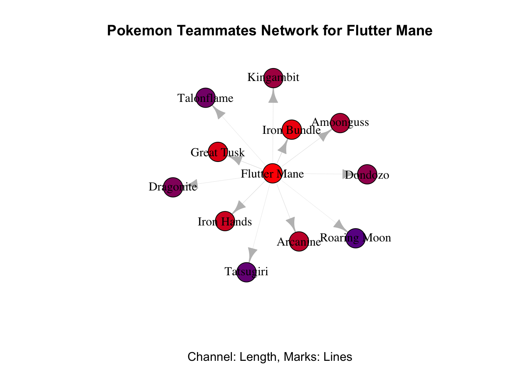

Code
library(igraph)
library(readr)
library(ggplot2)
library(dplyr)
library(gridExtra)
library(jsonlite)library(igraph)
library(readr)
library(ggplot2)
library(dplyr)
library(gridExtra)
library(jsonlite)POKEMONS.
Smogon is a popular online community of competitive Pokémon players that was founded in 2004. The community focuses on the competitive side of Pokémon battling, providing resources such as guides, forums, and a tier system that classifies Pokémon based on their power level. Smogon’s tier system is used by many competitive players to build their teams and strategies. The community also hosts tournaments and events for players to compete in.
Pokemon Showdown is an online battle simulator created by Smogon that allows players to build and battle with Pokémon teams in a virtual environment. It is widely used by the competitive Pokémon community and is an important tool for testing and refining strategies. Players can customize their teams with specific moves, items, and abilities, and then battle against other players in real-time.
The objective of this study is to develop effective visualizations for the comprehensive datasets available in the Smogon databases. The aim is to present the Pokemon battle data in a clear and intuitive manner using visual plots. Through the use of such visualizations, I aim to provide valuable insights and suggestions to users on how to build a successful Pokemon battle team. Our approach seeks to enhance the user’s understanding of the data by presenting it in a visually engaging format, thereby enabling them to make informed decisions when building their team. The ultimate goal is to offer an optimized user experience that facilitates an improved decision-making process and increases the success rate of the user’s Pokemon battle team.
import os
import requests
from lxml import html
from pathlib import Path
import sys
url = "https://www.smogon.com/stats/"
data_dir = os.path.join(os.getcwd(), "data")
def download_files(url, dir_path=data_dir):
# use pathlib to create the directory whether the parent directory exists or not
Path(dir_path).mkdir(parents=True, exist_ok=True)
response = requests.get(url)
parsed_body = html.fromstring(response.content)
for index in range(1, 65535):
try:
link = parsed_body.xpath("/html/body/pre/a[{index}]".format(index=index))[0]
except IndexError:
break
text = link.text
if ".." in text:
continue
if "." in text:
file_url = url + text
file_path = os.path.join(dir_path, file_url.split("/")[-1])
print("Downloading", file_url)
r = requests.get(file_url)
with open(file_path, "wb") as f:
f.write(r.content)
print("Downloaded", file_url)
#sys.exit()
else:
new_url = url + text
new_dir = os.path.join(dir_path, text)
download_files(new_url, new_dir)
def batch_download_by_year(YEAR):
response = requests.get(url)
parsed_body = html.fromstring(response.content)
for index in range(1, 65535):
try:
link = parsed_body.xpath("/html/body/pre/a[{index}]".format(index=index))[0]
except IndexError:
break
text = link.text
if str(YEAR) in text:
print("Downloading", YEAR)
new_url = url + text
new_dir = os.path.join(data_dir, str(YEAR), text)
download_files(new_url, new_dir)
year_url = url + str(YEAR) + "/"
year_dir = os.path.join(data_dir, str(YEAR))
download_files(year_url, year_dir)
def _test_parse():
response = requests.get(url)
parsed_body = html.fromstring(response.content)
link = parsed_body.xpath("/html/body/pre/a[999]")[0]
#text = link.text
#print(text)
if __name__ == "__main__":
batch_download_by_year(2023)I managed to grab a huge bunch of data from the Smogon forum since it is hard to collect similar Pokemon battle data from official websites, except for some crazy poke fans who can manually recognize and record the Pokemon ranking information and player teams from the official competition videos. The collected data can be accessed from this source. My local data collection is managed accordingly to the file hierarchy of this straightforward website. My current work focuses on the data recorded in 2023. The Pokemon battle data are stored in
.txtand.jsonformats. I am working on reading some forum threads about the data discussion and explanations. The next plan is to convert the interesting part of the data into an R data frame and end up with visualizations.
I applied the dataset called gen9vgc2023series2-1630 for this pokemon battle research.
gen9 stands for the 9th generation of pokemon of Scarlet & Violet. The games will feature a brand new open-world region, three original starters, and new Legendaries for players to discover.
vgc2023 stands for the Pokemon VGC (Video Game Championships) rules in 2023. The rules can vary slightly from year to year, but generally, the VGC format is a double battle format where each player brings a team of six Pokemon and chooses four of them to use in each battle. Players can only use Pokemon from the current generation of games, and there are restrictions on which Pokemon are allowed based on their species, level, and items.
series2 refers to detailed battle rules. This series allows trainers to use a team of 3-6 Pokémon (for Singles) or 4-6 Pokémon (for Doubles) from Level 1 to Level 100, with all Pokémon then set to Level 50. There are more details omitted here.
1630 stands for a specific battle tiers for a fan-made rules.
# Read the CSV files
pokemon_data <- read_csv("gen9vgc2023series2-1630.csv")
pokemon_data$`Usage%` <- as.numeric(gsub("%", "", pokemon_data$`Usage%`))
edge_data <- read_csv("teammates.csv")
# Filter the top 50 Pokemon
top_20_pokemon <- head(pokemon_data, 20)
The most popular pokemon till Feb, 2023: Flutter Mane.
top_20_pokemon# A tibble: 20 × 7
Rank Pokemon `Usage%` Raw `Raw%` Real `Real%`
<dbl> <chr> <dbl> <dbl> <chr> <dbl> <chr>
1 1 Flutter Mane 54.6 1454951 38.720% 729736 42.412%
2 2 Iron Bundle 40.8 1165153 31.007% 561782 32.651%
3 3 Iron Hands 32.4 1145260 30.478% 617069 35.864%
4 4 Great Tusk 27.8 673071 17.912% 364773 21.201%
5 5 Amoonguss 26.3 983437 26.172% 371485 21.591%
6 6 Arcanine 24.3 930540 24.764% 433178 25.176%
7 7 Gholdengo 22.0 663711 17.663% 299077 17.382%
8 8 Roaring Moon 18.5 642275 17.092% 268052 15.579%
9 9 Kingambit 17.4 556369 14.806% 238494 13.861%
10 10 Dragonite 17.0 396729 10.558% 160427 9.324%
11 11 Dondozo 16.2 315148 8.387% 166119 9.655%
12 12 Armarouge 15.9 524411 13.956% 262358 15.248%
13 13 Indeedee-F 15.8 532736 14.177% 235561 13.691%
14 14 Tatsugiri 15.8 313274 8.337% 176483 10.257%
15 15 Maushold 15.8 452690 12.047% 186586 10.844%
16 16 Talonflame 15.6 476666 12.685% 138081 8.025%
17 17 Brute Bonnet 14.0 374798 9.974% 156833 9.115%
18 18 Tyranitar 12.3 314751 8.376% 149872 8.711%
19 19 Annihilape 12.2 514816 13.700% 252072 14.650%
20 20 Palafin 11.9 416057 11.072% 235410 13.682%The given data frame provides information on the top used Pokemon in the Smogon database, along with their usage percentages, weighted and unweighted raw counts, and “real” counts. The “real” count refers only to the Pokemon that actually appear in battle, as opposed to counting all six Pokemon in a team. The data frame provides valuable insights into the popularity of different Pokemon in the Smogon community and can be used to inform strategic decisions regarding team building and battling.
top20_pokemon_list <- pokemon_data$Pokemon[1:20]
edge_data <- subset(edge_data, from %in% top20_pokemon_list & to %in% top20_pokemon_list)
# Create a graph from the edge data
g <- graph_from_data_frame(edge_data, directed = FALSE)
# Set vertex attributes: size and labels
V(g)$size <- top_20_pokemon$`Usage%`
V(g)$label <- top_20_pokemon$Pokemon
# Set edge attributes: width
E(g)$width <- as.numeric(substr(edge_data$weight, 1, nchar(edge_data$weight) - 1)) / 100# Plot the graph
layout <- layout_nicely(g)Warning in (function (graph, coords = NULL, dim = 2, niter = 500, start.temp =
sqrt(vcount(graph)), : NAs introduced by coercionsuppressWarnings({
plot(g,
vertex.label.cex = 0.8, # Adjust the font size of vertex labels
vertex.label.family = "sans",
vertex.label.color = "black",
vertex.frame.color = "black",
vertex.color = "lightblue",
edge.arrow.size = 0,
edge.color = "gray",
#layout = layout_with_fr(g, niter = 2000) # Set the layout algorithm
layout = layout,
#vertex.label.dist = 5, # Increase the distance of the label from the vertex
#vertex.label.degree = 45
)
title(main = "The top 20 Pokemon and their teammates")
})
These codes aim to create a network visualization of the top 20 Pokemon and their teammates in the gen9 VGC 2023 series 2 using the R package igraph. The code reads in two CSV files, “gen9vgc2023series2-1630.csv” and “teammates.csv”, which contain the data on the Pokemon and their teammates.
The graph is plotted with various visualization settings, such as adjusting the font size of vertex labels, setting the layout algorithm to layout_nicely(), and suppressing any warning messages that may arise during the plotting process. The resulting graph represents the top 20 Pokemon and their teammates as nodes and edges, respectively, with the size of each node representing its usage percentage.
The layout_nicely() isn’t a satisfying solution to such not even complex network. The static network appeared to be insufficient when the number of nodes and links increase.
It occurred to me that it is hard to increase the node distances. I have tried to apply the les miserable interactive network, but the code to the right side of d3= seems extremely long and very inconvenient to copy from the website. I would like to know that if I am getting anything wrong.
graph1 = ({
nodes: [
{id: "a"},
{id: "b"},
{id: "c"}
],
links: []
})
graph2 = ({
nodes: [
{id: "a"},
{id: "b"},
{id: "c"}
],
links: [
{source: "a", target: "b"},
{source: "b", target: "c"},
{source: "c", target: "a"}
]
})
graph3 = ({
nodes: [
{id: "a"},
{id: "b"}
],
links: [
{source: "a", target: "b"}
]
})
color = d3.scaleOrdinal(d3.schemeTableau10)
height = 400chart = ForceGraph(miserables, {
nodeId: d => d.id,
nodeGroup: d => d.group,
nodeTitle: d => `${d.id}\n${d.group}`,
linkStrokeWidth: l => Math.sqrt(l.value),
width,
height: 600,
invalidation // a promise to stop the simulation when the cell is re-run
})miserables = FileAttachment("output.json").json()
// Copyright 2021 Observable, Inc.
// Released under the ISC license.
// https://observablehq.com/@d3/force-directed-graph
function ForceGraph({
nodes, // an iterable of node objects (typically [{id}, …])
links // an iterable of link objects (typically [{source, target}, …])
}, {
nodeId = d => d.id, // given d in nodes, returns a unique identifier (string)
nodeGroup, // given d in nodes, returns an (ordinal) value for color
nodeGroups, // an array of ordinal values representing the node groups
nodeTitle, // given d in nodes, a title string
nodeFill = "currentColor", // node stroke fill (if not using a group color encoding)
nodeStroke = "#fff", // node stroke color
nodeStrokeWidth = 1.5, // node stroke width, in pixels
nodeStrokeOpacity = 1, // node stroke opacity
nodeRadius = 5, // node radius, in pixels
nodeStrength,
linkSource = ({source}) => source, // given d in links, returns a node identifier string
linkTarget = ({target}) => target, // given d in links, returns a node identifier string
linkStroke = "#999", // link stroke color
linkStrokeOpacity = 0.6, // link stroke opacity
linkStrokeWidth = 1.5, // given d in links, returns a stroke width in pixels
linkStrokeLinecap = "round", // link stroke linecap
linkStrength,
colors = d3.schemeTableau10, // an array of color strings, for the node groups
width = 640, // outer width, in pixels
height = 400, // outer height, in pixels
invalidation // when this promise resolves, stop the simulation
} = {}) {
// Compute values.
const N = d3.map(nodes, nodeId).map(intern);
const LS = d3.map(links, linkSource).map(intern);
const LT = d3.map(links, linkTarget).map(intern);
if (nodeTitle === undefined) nodeTitle = (_, i) => N[i];
const T = nodeTitle == null ? null : d3.map(nodes, nodeTitle);
const G = nodeGroup == null ? null : d3.map(nodes, nodeGroup).map(intern);
const W = typeof linkStrokeWidth !== "function" ? null : d3.map(links, linkStrokeWidth);
const L = typeof linkStroke !== "function" ? null : d3.map(links, linkStroke);
// Replace the input nodes and links with mutable objects for the simulation.
nodes = d3.map(nodes, (_, i) => ({id: N[i]}));
links = d3.map(links, (_, i) => ({source: LS[i], target: LT[i]}));
// Compute default domains.
if (G && nodeGroups === undefined) nodeGroups = d3.sort(G);
// Construct the scales.
const color = nodeGroup == null ? null : d3.scaleOrdinal(nodeGroups, colors);
// Construct the forces.
const forceNode = d3.forceManyBody();
const forceLink = d3.forceLink(links).id(({index: i}) => N[i]);
if (nodeStrength !== undefined) forceNode.strength(nodeStrength);
if (linkStrength !== undefined) forceLink.strength(linkStrength);
const simulation = d3.forceSimulation(nodes)
.force("link", forceLink)
.force("charge", forceNode)
.force("center", d3.forceCenter())
.on("tick", ticked);
const svg = d3.create("svg")
.attr("width", width)
.attr("height", height)
.attr("viewBox", [-width / 2, -height / 2, width, height])
.attr("style", "max-width: 100%; height: auto; height: intrinsic;");
const link = svg.append("g")
.attr("stroke", typeof linkStroke !== "function" ? linkStroke : null)
.attr("stroke-opacity", linkStrokeOpacity)
.attr("stroke-width", typeof linkStrokeWidth !== "function" ? linkStrokeWidth : null)
.attr("stroke-linecap", linkStrokeLinecap)
.selectAll("line")
.data(links)
.join("line");
const node = svg.append("g")
.attr("fill", nodeFill)
.attr("stroke", nodeStroke)
.attr("stroke-opacity", nodeStrokeOpacity)
.attr("stroke-width", nodeStrokeWidth)
.selectAll("circle")
.data(nodes)
.join("circle")
.attr("r", nodeRadius)
.call(drag(simulation));
if (W) link.attr("stroke-width", ({index: i}) => W[i]);
if (L) link.attr("stroke", ({index: i}) => L[i]);
if (G) node.attr("fill", ({index: i}) => color(G[i]));
if (T) node.append("title").text(({index: i}) => T[i]);
if (invalidation != null) invalidation.then(() => simulation.stop());
function intern(value) {
return value !== null && typeof value === "object" ? value.valueOf() : value;
}
function ticked() {
link
.attr("x1", d => d.source.x)
.attr("y1", d => d.source.y)
.attr("x2", d => d.target.x)
.attr("y2", d => d.target.y);
node
.attr("cx", d => d.x)
.attr("cy", d => d.y);
}
function drag(simulation) {
function dragstarted(event) {
if (!event.active) simulation.alphaTarget(0.3).restart();
event.subject.fx = event.subject.x;
event.subject.fy = event.subject.y;
}
function dragged(event) {
event.subject.fx = event.x;
event.subject.fy = event.y;
}
function dragended(event) {
if (!event.active) simulation.alphaTarget(0);
event.subject.fx = null;
event.subject.fy = null;
}
return d3.drag()
.on("start", dragstarted)
.on("drag", dragged)
.on("end", dragended);
}
return Object.assign(svg.node(), {scales: {color}});
}
import {howto} from "@d3/example-components"
import {Swatches} from "@d3/color-legend"# Create a data frame with the usage percentages for each teammate
teammates <- data.frame(
Name = c("Iron Bundle", "Great Tusk", "Iron Hands", "Arcanine", "Amoonguss", "Kingambit", "Dondozo", "Dragonite", "Talonflame", "Tatsugiri", "Roaring Moon"),
Usage = c(37.840, 29.509, 27.440, 23.847, 23.497, 19.474, 17.338, 17.326, 16.669, 16.646, 14.669)
)
# Reorder the factor levels of the Name variable based on the Usage variable
teammates$Name <- factor(teammates$Name, levels = teammates$Name[order(desc(teammates$Usage))])
# Create a bar plot
ggplot(data = teammates, aes(x = Name, y = Usage)) +
geom_bar(stat = "identity") +
xlab("Teammate Name") +
ylab("Usage Percentage") +
ggtitle("Usage Percentages of Teammates for Flutter Mane")
Usage Percentages of Teammates for Flutter Mane, ordered by the usage percentages.
# Create a data frame with the names and weights of the teammates
teammates <- data.frame(
from = rep("Flutter Mane", times = 11),
to = c("Iron Bundle", "Great Tusk", "Iron Hands", "Arcanine", "Amoonguss", "Kingambit", "Dondozo", "Dragonite", "Talonflame", "Tatsugiri", "Roaring Moon"),
weight = c(37.840, 29.509, 27.440, 23.847, 23.497, 19.474, 17.338, 17.326, 16.669, 16.646, 14.669)
)
# Create a graph object
g <- graph_from_data_frame(teammates, directed = TRUE)
# Set the vertex attributes
V(g)$label <- V(g)$name
V(g)$size <- 20
# Set the edge attributes
E(g)$width <- 1/100 * E(g)$weight
# set size of nodes based on Usage% from top_20_pokemon
size <- top_20_pokemon$`Usage%`/1000
# color nodes based on Usage%
cols <- colorRampPalette(c("blue", "red"))(length(size))
cols <- cols[rank(rank(size))]
# # Add the size legend
# legend("bottomright",
# legend = c("Usage%"),
# cex = 0.8,
# pt.cex = 2,
# pt.bg = "white",
# pch = 21,
# pt.col = "black",
# bty = "n",
# title = "Node Size")
#
# # Add the color legend
# legend("bottomleft",
# legend = c("Low Usage", "High Usage"),
# fill = colorRampPalette(c("blue", "red"))(10),
# bty = "n",
# title = "Node Color")
# Plot the graph with captions and legends
plot(g, vertex.label.color = "black", vertex.color = cols, edge.color = "gray",
main = "Pokemon Teammates Network for Flutter Mane",
sub = "Channel: Length, Marks: Lines",
# vertex.size.legend = list(title = "Usage%", labels = c("Low", "High")),
# vertex.color.legend = list(title = "Usage%", at = seq(0, 1, length.out = length(cols)), labels = NULL),
# edge.width.legend = list(title = "Weight", at = seq(0, 1, length.out = 5), labels = NULL)
)
This code creates a network visualization of the top 20 ranked Pokémon and their teammates for the Pokémon named “Flutter Mane”. The visualization shows the connections between the Pokémon and their teammates. Center node represents a Pokémon and others are teammates, and the size of the node is proportional to the Usage% of that Pokémon in battles. The color of the node represents the Usage% of the Pokémon, with blue representing low usage and red representing high usage.
This visualization is useful for understanding the relationships between the top-ranked Pokémon and their teammates, and can provide insights for building a strong Pokémon battle team. It can also help identify patterns in the data that may be difficult to see in a table or spreadsheet format.
# load the necessary libraries
# create a sample data frame of items and their frequencies
items <- data.frame(
Item = c("Focus Sash", "Choice Specs", "Life Orb", "Booster Energy", "Other"),
Freq = c(32.151, 26.383, 24.673, 13.824, 2.969)
)
# # create a bar chart of the item frequencies
# bar_chart <- ggplot(items, aes(x = Item, y = Freq, fill = Item)) +
# geom_bar(stat = "identity") +
# ggtitle("Item Frequencies") +
# xlab("Item") +
# ylab("Frequency (%)") +
# theme(axis.text.x = element_text(angle = 90, vjust = 0.5, hjust=1))
#
# # create a sorted bar chart of the item frequencies
# sorted_bar_chart <- items %>%
# arrange(desc(Freq)) %>%
# ggplot(aes(x = Item, y = Freq, fill = Item)) +
# geom_bar(stat = "identity") +
# ggtitle("Item Frequencies (sorted)") +
# xlab("Item") +
# ylab("Frequency (%)") +
# theme(axis.text.x = element_text(angle = 90, vjust = 0.5, hjust=1))
# create a stacked bar chart of the item frequencies by category
categories <- c(rep("Common", 3), rep("Uncommon", 1), "Rare")
item_categories <- data.frame(Item = items$Item, Category = categories, Freq = items$Freq)
stacked_bar_chart <- ggplot(item_categories, aes(x = Category, y = Freq, fill = Item)) +
geom_bar(stat = "identity") +
ggtitle("Item Frequencies by for Flutter Mane") +
xlab("Category") +
ylab("Frequency (%)") +
theme(axis.text.x = element_text(angle = 90, vjust = 0.5, hjust=1))
stacked_bar_chart# create a grid of the plots
#grid.arrange(bar_chart, sorted_bar_chart, stacked_bar_chart, ncol = 2)This code creates a stacked bar chart of the item frequencies for the Pokemon “Flutter Mane”. The code first creates a sample data frame called “items” with the columns “Item” and “Freq” to represent the name of each item and its frequency. The next step involves creating a new data frame called “item_categories” which adds a third column called “Category” to the “items” data frame. The “Category” column is a factor variable that categorizes each item as “Common”, “Uncommon”, or “Rare”.
The code then uses the ggplot2 library to create a stacked bar chart, with the “Category” variable on the x-axis, the “Freq” variable on the y-axis, and each “Item” represented by a different color within each category. The resulting plot shows the relative frequency of each item in each category.
The code also contains commented-out code that creates two additional bar charts: a basic bar chart of the item frequencies and a sorted bar chart of the item frequencies. These were likely created as exploratory plots before settling on the final stacked bar chart. Finally, the code also includes commented-out code for creating a grid of the plots, but this is not used in the final output.
# load the necessary libraries
# read in the data from the json file
data <- fromJSON("gen9vgc2023series2-1630_move.json")
# extract the Items data and sort by frequency
items <- data.frame(data$Items, stringsAsFactors = FALSE)
items <- items[order(-as.numeric(gsub("%", "", items$Freq))),]
# select the top 5 items
top_items <- head(items, 5)
# create a list of ggplot objects for each item
item_plots <- lapply(seq_along(top_items$Item), function(i) {
# extract the item name and frequency
item <- top_items$Item[i]
freq <- top_items$Freq[i]
# create a data frame for the current item
item_data <- data.frame(Frequency = c(freq, "Other"), Count = c(freq, 100 - freq))
# create a pie chart for the item
p <- ggplot(item_data, aes(x = "", y = Count, fill = Frequency)) +
geom_bar(stat = "identity", width = 1, color = "white") +
coord_polar("y", start = 0) +
ggtitle(item) +
theme_void() +
theme(legend.position = "none")
# return the plot object
return(p)
})
# arrange the plots in a grid
grid.arrange(grobs = item_plots, ncol = 2)> # arrange the plots in a grid > grid.arrange(grobs = item_plots, ncol = 2) Error in unit(rep(1, nrow), “null”) : ‘x’ and ‘units’ must have length > 0
I would like to plot the item distributions but ended up with this error message.
This blog discusses the popular online community of competitive Pokémon players, Smogon, and its battle simulator, Pokémon Showdown. The blog focuses on the development of effective visualizations using the R package igraph and ggplot2 for the comprehensive datasets available in the Smogon databases. Specifically, the blog presents codes for creating a network visualization of the top 20 Pokémon and their teammates and a stacked bar chart of item frequencies for a specific Pokémon, “Flutter Mane.” The visualizations provide insights and suggestions for building a successful Pokémon battle team and help identify patterns in the data that may be difficult to see in a table or spreadsheet format.
Overall, the blog aims to enhance the user’s understanding of the data by presenting it in a visually engaging format to facilitate an improved decision-making process and increase the success rate of the user’s Pokémon battle team.